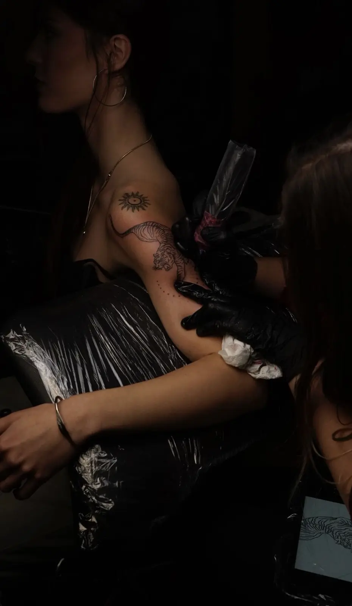
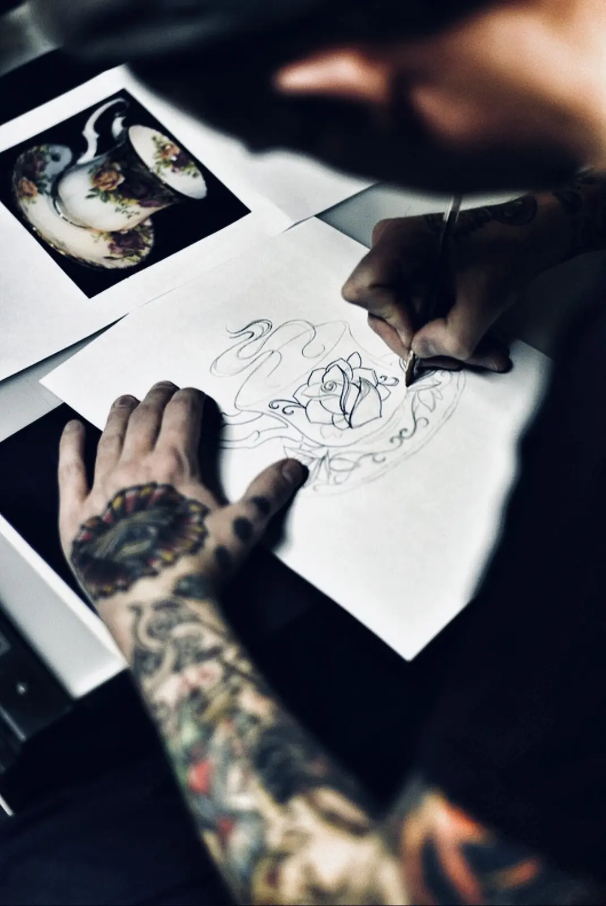
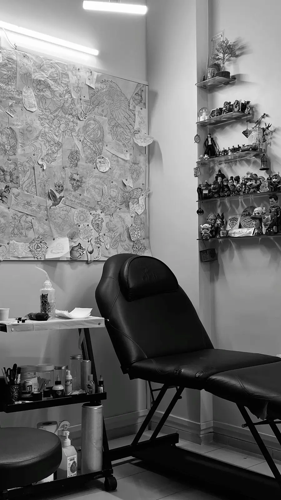
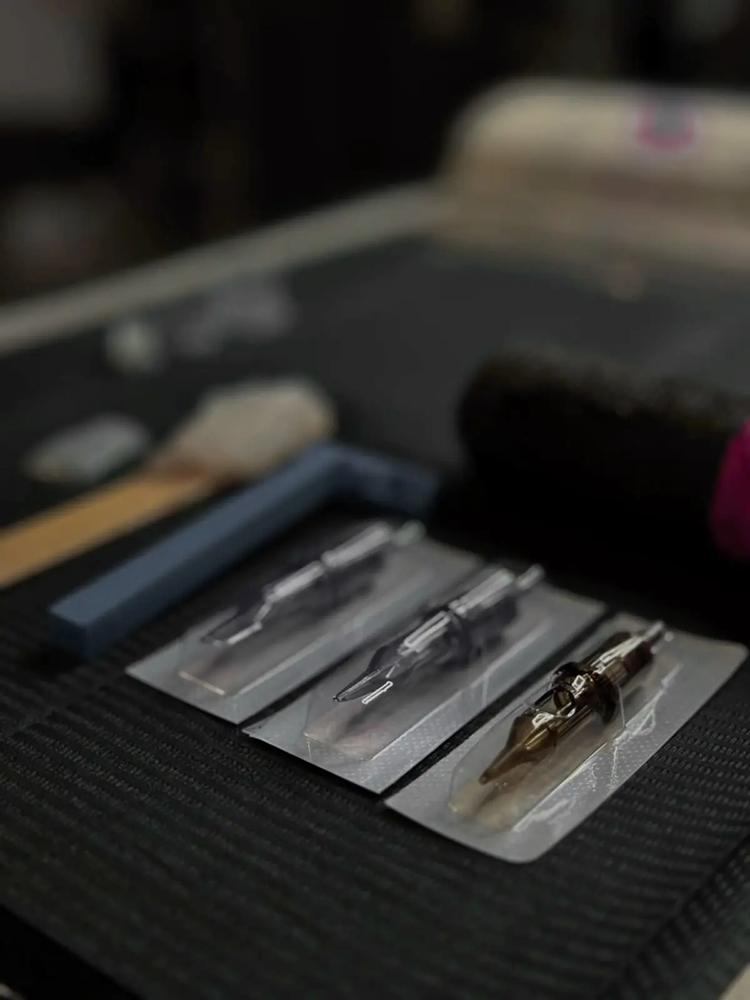
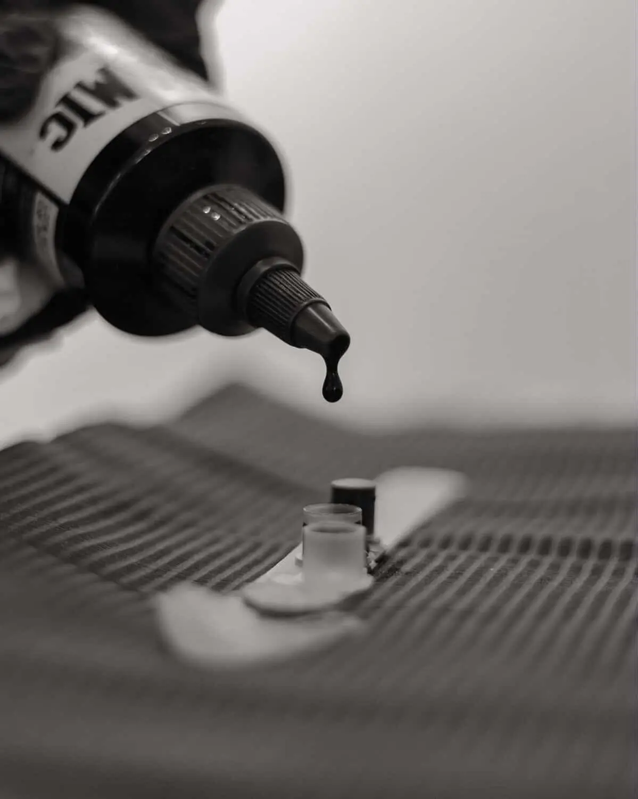

Авторські татуювання · Київ
Не вибирай
татуювання.
Створи своє.
Авторські ескізи й татуювання у графіці, реалізмі, орнаменті та кольорі. Від першої ідеї до повністю загоєної роботи.

OBSCURA / 01Робота говорить
за майстра.
Твоя ідея може бути нечіткою.
Вона не має бути
готовим ескізом.

Створений для
однієї людини.
Достатньо образу, думки або кількох референсів. Я розроблю композицію під твою ідею, анатомію та обрану ділянку тіла.
- 01 Обговорюємо ідею та референси
- 02 Визначаємо стиль, розмір і місце
- 03 Створюю та адаптую композицію
- 04 Переносимо ескіз на шкіру
Ескіз не повторюється для інших клієнтів.
Замовити свій ескіз
Ти можеш не знати
обличчя майстра.
Але впізнаєш його роботу.
Дані наведено для демонстрації концепції портфоліо.

Чисто. Стерильно.
Без компромісів.
- Одноразові голки та витратні матеріали
- Розпакування у присутності клієнта
- Бар’єрний захист обладнання
- Дезінфекція поверхонь перед сеансом
- Сертифіковані пігменти
- Правильна утилізація матеріалів
Кожна робота
має свою ціну.
Фінальна вартість залежить від розміру, деталізації, розташування та кількості сеансів.
Ціни демонстраційні та будуть замінені даними майстра.

Підготуй тіло.
Про решту подбаємо ми.
01Добре виспися та поїж за 2–3 години до сеансу.
02Не вживай алкоголь щонайменше 24 години.
03Не засмагай і не травмуй ділянку шкіри.
04Повідом про алергії, захворювання та ліки.
Що ти хочеш
знати до сеансу.
Наскільки це боляче?＋
Відчуття залежать від місця, тривалості сеансу й індивідуальної чутливості. До кожної роботи ми підходимо без поспіху.
Як розраховується вартість?＋
Після обговорення розміру, стилю, деталізації та місця нанесення ти отримаєш точний розрахунок до бронювання.
Чи можна змінити готовий ескіз?＋
Так. Деталі узгоджуються до сеансу, а фінальна посадка коригується безпосередньо під анатомію.
Як доглядати за татуюванням?＋
Після сеансу ти отримаєш персональну інструкцію відповідно до типу захисної плівки та особливостей роботи.
Розкажи
про свою ідею.
Не потрібно готувати технічне завдання. Опиши образ, настрій або покажи референс.
Написати в Telegram